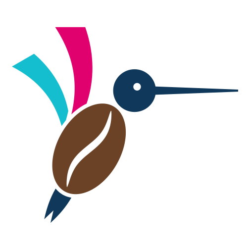
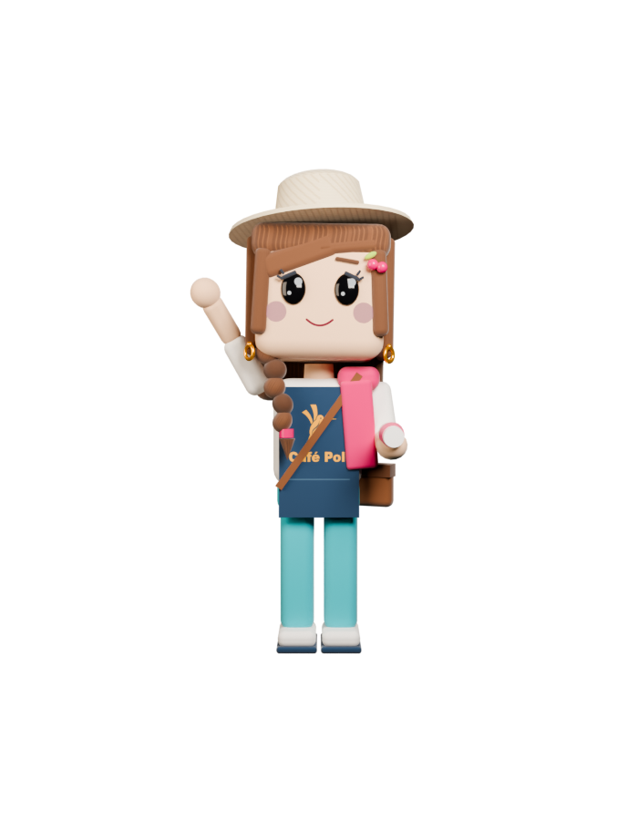

Recorrido 360° · City Campus
Segundo piso del Politécnico Grancolombiano
Preparando el café…
Arrastra para mirar alrededor. Poligreca te guía con su voz: sube el volumen. Funciona en celular, tableta y computador.
Segundo piso del Politécnico Grancolombiano
Preparando el café…
Arrastra para mirar alrededor. Poligreca te guía con su voz: sube el volumen. Funciona en celular, tableta y computador.

Toca un punto para ir allí. La parte rosada muestra hacia dónde miras.
↔ Arrastra para girar · ↕ arriba o de lado · pellizca o usa la rueda para acercar
La app de Café Poli
whafonsecav.github.io/Prototipo-CafePoli/app

¿Seguimos donde ibas?